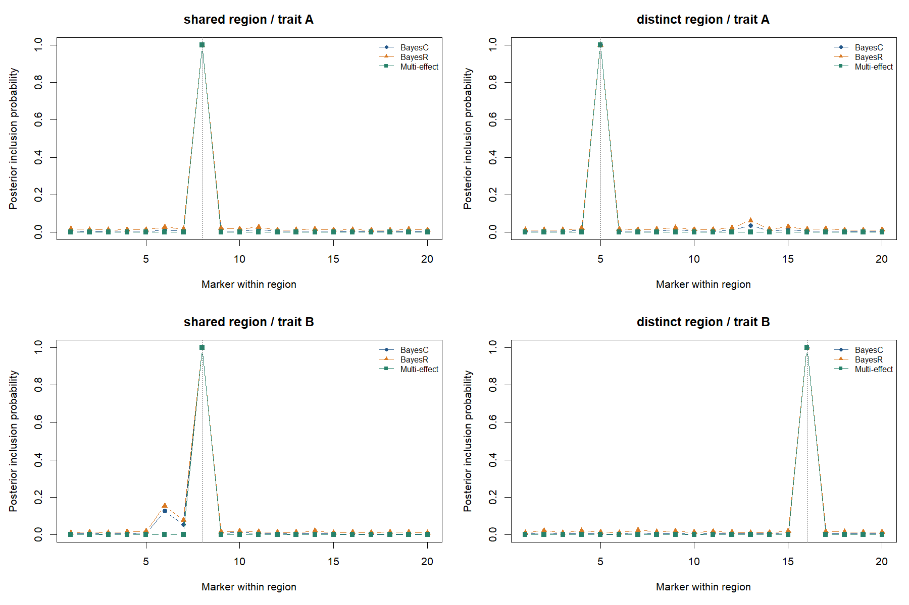
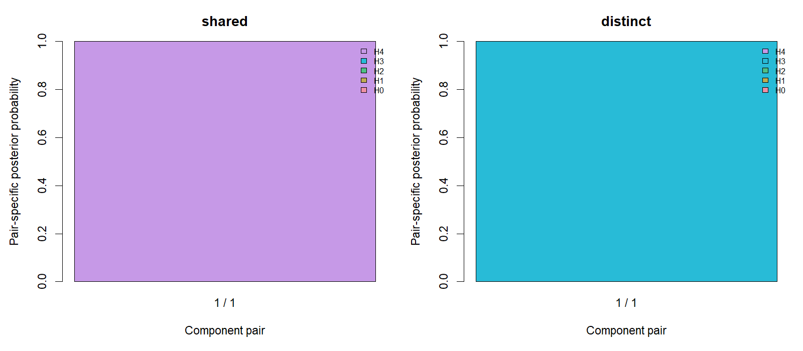

From GWAS results to fine-mapping and colocalisation
The workflow
There are two routes. A saved individual-level BED gbayes::gbayes() fit can be interpreted by region using LD from the same people and markers. This reuses the global posterior and does not refit it. Alternatively, start with aligned GWAS results and a prepared Glist. Regional LD can be computed on demand; prepared sparse LD is optional. Prepare the statistics, fit each region and trait, inspect marker support, then compare fitted multi-effect components with gmap_coloc_components().
This example requires development installations of gbase, gbayes, gmap and gsim. The website displays saved results and does not run models. The current calls are shown below; a refreshed end-to-end script remains separate work.
Prepared summary-statistic input
Prepare raw_stat from gact::getGWAS(..., rm.na = FALSE) or supply the same layout yourself, then use stat <- gbase::checkStat(Glist, raw_stat, ...). gmap() consumes stat and that Glist without repeating QC or allele alignment. It accepts a single-study data frame or the gact list of marker-by-study b, seb, n, and z matrices with identical dimnames. Shared marker metadata need not be expanded into a separate genome-wide data frame per study.
fit <- gmap::gmap(stat, Glist, sets = regions, method = "multi_effect")For beta/SE input, vy is the sample phenotype variance (denominator n - 1), inferred when omitted. Supply a scalar or vector named in study order to override. Conversion assumes intercept-only OLS with one common integer sample size per study within each region. Existing score/information input needs no vy. Requested markers must have usable sufficient statistics in every study; Z-only or imputed-only entries need explicit score/information. gmap constructs native input tables one region at a time and currently fits studies separately. Full LD remains the multi-effect default; existing model-specific QC screens remain opt-in. Without prepared sparse LD, gmap reuses gbase::getLD() to decode and form LD once per region, sharing it across studies and fitting attempts. A genome assembly label is optional and is recorded as unspecified when absent.
Grouped controls
Scientific parameters retain qgg names: h2, mc, pi, gamma, vy, vg, ve, vb, nub, nug, nue. Missing vy is inferred from selected beta/SE/n summaries or prepared metadata; vg=vyh2, Bayesian ve=vy, and Bayesian mixture vb=vg/(mcsum(pi*gamma)). Multi-effect restores working-scale ve=1, initial vb=.02, effect-variance learning, 500 sweeps and objective tolerance 1e-10. Supply suitable ve/vb for different outcome/effect units. Explicit values and control overrides are respected.
fit <- gmap::gmap(stat, G, sets = loci, method = "bayesC",
learn = list(updateB = TRUE, updatePi = TRUE),
ld = list(threshold = 1),
cs = list(threshold = .95, r2 = .5),
control = list(mcmc = list(nit = 1000L, nburn = 100L, nrun = 4L,
swap = TRUE, swapprob = .05, swapr2 = .8)), seed = 10)
fit$initialization
fit$diagnostic_summary
fit$ld_swapEffect-variance learning defaults on for all methods; BayesC/BayesR also weakly learn pi, with residual variance fixed. Full LD is the default; auto uses eigen inference for multi-effect/truncation and dense MCMC for full-LD Bayesian mixtures. Both can compute regional LD on demand. Swaps default to probability .05 and LD r-squared .8. Four chains provide between-chain diagnostics, without guaranteeing mixing. qc contains optional neighbors/slalom; cs contains coverage, purity and reporting/conditional screens. Diagnostics are always retained. There are no legacy argument aliases. fit$settings records the resolved public groups.
Functional annotations currently mean fixed nonnegative marker weights for multi-effect, supplied as a labelled vector or rsids/weight table. Annotation coefficient learning and Bayesian mixture annotations are unsupported. There is no separate vg update; nug=4 is reserved.
Saved PIPs can still be grouped without refitting using getCredibleSets(); its separate CS2/CS3 contract is unchanged.
From an individual-level BED fit to regional marker support
First fit the whole selected marker panel using pre-adjusted phenotypes, as in the Bayesian regression guide. Then prepare sparse LD from that same Glist and use it to interpret the saved posterior in named regions:
G <- gbase::gprep(bedfiles="cohort.bed", ids=phenotypes$id)
fit <- gbayes::gbayes(data=phenotypes, Glist=G, trait="height", method="bayesr",
prior=list(residual_variance=.8, effect_variance=.2),
control=list(burnin=1000, sampling_sweeps=4000, seeds=c(31,97)))
G <- gbase::gprep(Glist=G, task="sparseld", out_prefix="build/ld/cohort",
r2=0, max_distance_bp=0, max_distance_variants=49)
regions <- list(locus=G$sparseLD$marker_metadata$marker_id[101:150])
mapped <- gmap::gmap_bed(fit, G, regions)
summary(mapped)
plot(mapped, region="locus", trait="height")The 101:150 marker range is illustrative; choose a biological region in reference order. Here r2=0 and the 49-marker window retain every pair in that contiguous 50-marker region. Set the window to span the largest region you intend to interpret. gmap_bed() checks the saved fit against the Glist’s selected people, physical BED marker offsets, alleles and frequencies. It rejects incomplete within-region LD unless control=list(allow_incomplete_ld=TRUE) is explicitly supplied; those groups are then labelled approximate. Regions are bounded to 2048 markers by default.
The returned PIPs and effect summaries are from the global BED fit. Native gmap groups these marginal PIPs using within-region LD. These groups are not component credible sets, do not carry guaranteed coverage and are not regional refits. Inspect chain behavior and parameter summaries on fit itself. The same call accepts a saved joint-trait BED BayesC/BayesR fit and returns separate labelled regional views for each trait.
Prepare summary statistics
Each study has a checked data frame with rsids, ea, nea, b, seb and n, or uses the shared-marker gact matrix layout. checkStat owns alignment. The saved historical example uses older column labels, converted explicitly below.
library(gmap)
G <- gbase::gprep(bedfiles = "build/examples/gmap-workflow/reference.bed")
example <- readRDS("build/examples/gmap-workflow/workflow.rds")
stat <- lapply(example$gwas, function(x) {
rename <- c(marker="rsids", allele1="ea", allele2="nea", beta="b", se="seb")
for (name in intersect(names(rename), names(x)))
names(x)[names(x) == name] <- rename[[name]]
at <- match(x$rsids, unlist(G$rsids))
x$chr <- unlist(G$chr)[at]; x$pos <- unlist(G$pos)[at]
gbase::checkStat(G, x, excludeMAF=NULL, excludeMAFDIFF=NULL,
excludeHWE=NULL, excludeMISS=NULL)
})
regions <- example$regions
# To rerun the saved example and compare raw/precomputed inputs for all methods:
# source("tools/validation/verify_gmap_interface.R")The helper supports continuous outcomes analysed by ordinary linear regression with an intercept and conventional standard errors: a separate y ~ marker regression for each marker, without other covariates. All markers within a trait must use the same individuals. Supply the sample phenotype variance, not the residual variance or an assumed value of one.
For centered genotype \(x_j\) and outcome \(y\), the OLS identities give:
\[ d_j=x_j^\mathsf{T}x_j = \frac{(n-1)s_y^2}{(n-2)\operatorname{SE}(\hat\beta_j)^2+\hat\beta_j^2}, \qquad x_j^\mathsf{T}y=d_j\hat\beta_j. \]
Optional gmap_stat() returns information = d and score = d * beta. The main interface performs this conversion region by region when needed. The native model combines these with the regional LD correlation matrix \(R\):
\[ X^\mathsf{T}X \approx D^{1/2} R D^{1/2},\qquad D=\operatorname{diag}(d_j). \]
The marginal conversion is exact under the stated OLS contract. The full matrix is exact only with matching in-sample LD, apart from storage precision. This example uses an independent panel, so its off-diagonal entries are approximations. The SuSiE summary-statistic documentation also explains the role of in-sample LD in recovering an individual-data fit.
Covariate-adjusted, mixed-model, logistic, robust-SE, meta-analysis and varying-sample-size summaries are outside this helper’s contract. It cannot recognise the generating analysis from numbers alone. Supplying equal n does not prove identical samples. Correctly prepared cross-products can still be passed directly to gmap(); z-only conversion is deferred.
A small simulation with known truth
The complete script generates binomial dosages with correlated neighbours and uses gsim() for continuous phenotypes. The artificial coordinates have no biological interpretation.
| Setting | Value |
|---|---|
| GWAS cohorts | Two disjoint cohorts of 10,000 individuals each |
| LD reference | Independent 4,000-individual panel from the same generator |
| Regions | Two artificial chromosomes, 20 markers each |
| Genotype construction | Allele frequency 0.3; adjacent copy probability 0.8 |
| Shared region | m08 affects both traits |
| Distinct region | m25 affects A; m36 affects B |
| Effects | 0.12 and 0.14 per standardized dosage; converted to raw-dosage units |
| Residual variance | Known simulation value 1, fixed during fitting |
| Seeds | Genotypes 20260915; gsim 20260916 and 20260917 |
The LD reference retains all within-region correlations, is prepared once, and caches one eigensystem per region. Each call reuses that preparation across traits. The script fits traits separately; it is not a joint multivariate Bayesian model. Marginal GWAS results are calculated separately in each cohort.
Full LD is the default. An explicit ld$threshold = c(.995, .99, .95) tries successively smaller masses when earlier attempts fail the convergence rule. The eigendecomposition is not repeated. For a region with several traits, one threshold is accepted only when every trait passes. Multi-effect fits use their native convergence flag; BayesC and BayesR use the configured maximum between-chain PIP range. The selected threshold, achieved mass, retained rank and score-projection change are in diagnostic_summary; eigen_attempts retains one lightweight row per attempted trait and threshold.
fit$diagnostic_summary
fit$eigen_attempts
# Exact full-rank likelihood, without fallback
full <- gmap(stat, G, sets = regions, method = "multi_effect", ve = 1, vb = .04,
control = list(multi = list(effects = 3L)))If no attempted likelihood passes, the last complete fit is returned with status = "provisional" and a warning; the threshold is therefore never hidden. Only positive directions are retained, materially indefinite LD is rejected, and every truncated likelihood explicitly projects the score into the retained space. Residual-variance learning currently requires the full-rank setting.
Fit the three methods
mc <- list(nburn = 1000L, nit = 5000L, nrun = 2L, swap = FALSE)
bayesc <- gmap(stat, G, regions, method = "bayesC", ve = 1, vb = .04,
pi = c(.95, .05), control = list(mcmc = mc), seed = 31)
bayesr <- gmap(stat, G, regions, method = "bayesR", ve = 1, vb = .04,
pi = c(.95, .01, .01, .03), control = list(mcmc = mc), seed = 31)
multi <- gmap(stat, G, regions, method = "multi_effect", ve = 1, vb = .04,
learn = list(updateB = TRUE),
control = list(multi = list(effects = 3L, maxiter = 500L)))These deliberately specified priors differ between methods; the example is not a ranking experiment. effect_variance is on the original GWAS effect scale. BayesR uses its default variance multipliers. Multi-effect can reduce unneeded component variances to zero. Residual variance is fixed in this example; the known simulation value is not a general recommendation for data. A regional fit also omits the other region’s small genetic contribution, so fixing the residual variance at one is a deliberate working approximation. The multi-effect fit uses full rank because its saved components are used for colocalisation below; component colocalisation does not accept a truncated likelihood.
Learn parameters when needed
Initialization and learning are separate. Multi-effect defaults to learning component variances; BayesC/BayesR weakly learn pi and vb by default, keeping ve=vy fixed. The Dirichlet prior has alpha=1000*pi (learn$concentration=1000), and nub=20 centres the effect-variance prior mean on initial vb. Use learn=list(updateB=FALSE, updatePi=FALSE) for fixed mixture parameters.
learned <- gmap(stat, G, regions, method = "bayesR", ve = 1, vb = .04,
nub = 6, learn = list(updateB = TRUE, updatePi = TRUE),
control = list(mcmc = mc))
learned$initialization
learned$parametersBayesian effect/residual learning uses scaled inverse chi-square priors with scale (df-2)/df times the starting variance; mixture learning uses starting-pi-centred Dirichlet concentrations. Multi-effect updateB uses native variance optimization. Residual learning requires the reference people and full complete LD:
learned_multi <- gmap(list(A = stat_in_sample), G_in_sample, regions,
method = "multi_effect", vy = var(y), ve = 1, vb = .04,
ld = list(insample = TRUE), learn = list(updateB = TRUE, updateE = TRUE),
control = list(multi = list(effects = 3L)))Normalization is response_ss=(n-1)*vy and likelihood_dimension=n-1 for an intercept-only model. Sample identity cannot be established from counts. External-panel or incomplete LD cannot support this residual-learning claim.
Inspect estimates, sets and chains
summary(bayesr)
head(bayesr$estimates)
posterior_sets <- gmap_sets(bayesr)
posterior_sets$summary
posterior_sets$members
gmap_bfdr(bayesr, threshold = c(0.8, 0.9, 0.95))
gmap_bfdr(bayesr, target = 0.05)
bayesr$details$shared$A$chain_agreement
plot(bayesr, region = "shared", trait = "A", quantity = "chains")
summary(multi)
multi$sets$shared$A
plot(multi, region = "shared", trait = "A", quantity = "objective")
The following saved results describe the earlier fixed simulation settings, not the new automatic defaults; they remain historical evidence. All methods selected the causal marker first:
| Region / trait | Top marker (all methods) | BayesC sum of PIPs | BayesR sum of PIPs | Multi-effect sum of PIPs |
|---|---|---|---|---|
| Shared / A | m08 | 1.109 | 1.297 | 1.000 |
| Shared / B | m08 | 1.273 | 1.465 | 1.000 |
| Distinct / A | m25 | 1.155 | 1.356 | 1.000 |
| Distinct / B | m36 | 1.111 | 1.293 | 1.000 |
The top-marker PIPs exceed 0.99999. Each fit returned one complete set. All four multi-effect fits converged in two sweeps. The largest BayesR PIP range between the two chains was 0.014. These strong signals make an easy workflow demonstration, not a demanding fine-mapping evaluation.
BayesC/BayesR report PIPs pooled over the two chains. Chain-specific PIPs and ranges are available; agreement alone does not certify convergence. Their sets group marginal PIP mass within LD neighbourhoods. Multi-effect sets represent component assignment probabilities. These set probabilities are not interchangeable, and this one simulation does not establish coverage. The sum of PIPs is the expected number of active markers, not necessarily the number of independent signals.
gmap_sets() keeps the native interpretation in its meaning column: marginal_pip_mass for BayesC/BayesR neighbourhood groups and component_assignment for multi-effect credible sets. Its summary table also retains completeness, pairwise LD purity, incomplete-LD, duplicate and fit-status fields. The member table gives the markers, posterior weights and LD to the lead.
gmap_bfdr() uses only marker PIPs. At threshold \(t\), its expected number of false discoveries is \(\sum_{j:PIP_j\ge t}(1-PIP_j)\) and BFDR is that value divided by the number selected. With target, it returns the largest marker group defined by a PIP threshold whose BFDR is no larger than the target. This posterior summary does not provide a frequentist FDR guarantee.
Compare the traits without refitting
shared <- gmap_coloc_components(
multi, multi, G, trait1 = "A", trait2 = "B",
control = list(complete_region_coverage = TRUE,
non_overlapping_samples = TRUE)
)
summary(shared)
shared$estimates
shared$component_status
plot(shared, region = "shared")
plot(shared, region = "distinct")
H0 means neither trait is associated; H1/H2 mean only one is associated; H3 means distinct causal variants; H4 means a shared causal variant. These are component-pair probabilities, not a single region-wide posterior. The defaults are per-variant priors \(p_1=p_2=10^{-4}\) and \(p_{12}=10^{-5}\). In this run, shared-region H4 was 0.999999999991; distinct-region H3 rounded to 1, with H4 about \(3.24\times10^{-45}\). These values reflect this strong, artificial example and its specified priors, not general performance. Changing these priors reuses the saved evidence. No eligible component pairs means there is no eligible comparison; it is not evidence for H0.
Numerical checks and saved results
The script compares the converted scores and diagonals against direct cross-products from the simulated individuals. It also fits all three methods from both routes, with the same LD and seeds, and checks PIPs and posterior means. That validates the conversion; it does not validate the external-LD approximation or establish calibration. The LD file checksums are checked before and after fitting.
The run on 15 September 2026 used gsuite 0.43.0, gsim 0.9.0 and R 4.4.1. The largest score/diagonal discrepancy was \(1.82\times10^{-12}\); the largest posterior-mean discrepancy was \(1.11\times10^{-16}\). PIPs agreed to numerical precision. Approximate observed times for four region/trait fits per method were 0.69 s (BayesC), 6.16 s (BayesR) and 0.36 s (multi-effect). The whole script took 17.91 s, including preparation, repeat fits for verification, colocalisation and figures. These are illustrative elapsed times on one laptop, not a benchmark; another package-build process was also active.
example$conversion
example$equivalence
example$timing
summary(example$fits$bayesr)
summary(example$coloc)workflow.rds contains the summaries, prepared statistics, truth, fitted objects and checks. report.txt records summaries and package versions. The directory also contains two figures and compact CSV tables. Saved fits can be plotted without the LD files; a new gmap_coloc_components() call requires the reference files so that eligibility and reference checks can run.
ABF colocalisation
For at most one causal variant per trait, compare the aligned GWAS tables directly. This route uses native gmap ABFs; it does not require an LD object, gmap_stat() or a Bayesian fine-mapping fit. The example’s two cohorts are disjoint, and each selected region contains one generating causal variant per trait, so it is suitable for illustrating this model.
markers <- regions$shared
first <- gwas$A[match(markers, gwas$A$marker), ]
second <- gwas$B[match(markers, gwas$B$marker), ]
abf <- gmap_coloc(
first, second, region = "shared",
phenotype_sd1 = sqrt(example$phenotype_variance[["A"]]),
phenotype_sd2 = sqrt(example$phenotype_variance[["B"]]),
p1 = 1e-4, p2 = 1e-4, p12 = 1e-5)
abf$shared_variant_probabilityEach table requires rsids, chr, pos, ea, nea, b and seb. Rows and alleles must match exactly. ea is the effect allele; effects and standard errors are on the phenotype scale per allele. Phenotype standard deviations are supplied here, unlike the variances passed to gmap_stat(). The effect-prior SD is the specified fraction of each phenotype SD. Binary/log-odds, z-only and p-value-only inputs are not supported, and phenotype SD is never inferred.
H0 means neither trait is associated, H1/H2 one trait alone, H3 distinct causal variants and H4 a shared causal variant. Here these are regional probabilities under the single-causal model. The earlier multi-effect results instead apply to individual component pairs; they must not be added into a regional posterior. Marker probabilities are conditional on H4, not marginal fine-mapping PIPs.
Use separate calls to examine alternative association priors. Regional coverage and sample independence are scientific assumptions of this model and must be established by the caller. Selected MR instruments alone do not provide complete regional data. Evidence for shared association is not by itself evidence for a causal effect of one trait on another.
Chain disagreement is a warning
BayesC/BayesR sets remain available when chains disagree. Inspect fit$diagnostic_summary: chain_agreement_pass, chain_disagreement, max_pip_range, and reporting_allowed distinguish diagnostics from reporting. Bayesian converged is NA and a disagreeing fit has status chain_warning; its reporting_allowed remains TRUE. Multi-effect nonconvergence still gates its optional reporting screen. Do not use a Bayesian convergence field as an automatic set-removal rule. QC, purity and conditional-support screens are unchanged.
Non-finite posterior summaries remain ineligible for reporting; the warning-only policy applies to chain agreement, not numerical failures.
Optional regional QC and reporting for all methods
Neighbor-sign and SLALOM-style QC run before fitting and can be enabled for multi_effect, BayesC or BayesR. QC and conditional screening require one study, finite aligned Z-scores and fixed residual variance. They remain opt-in and do not repeat checkStat alignment. QC uses full regional LD; reporting uses the original, untruncated LD among retained markers, even with ld$threshold below one.
screened <- gmap::gmap(stat, G, loci, method = "bayesR",
qc = list(neighbors = TRUE, slalom = TRUE),
cs = list(reporting = TRUE, conditional = TRUE))
screened$neighbor_sign
screened$slalom
screened$reportingReporting checks pairwise LD purity and duplicate sets. The conditional screen retains one primary set and requires conditional support for additional sets. Bayesian chain disagreement remains a warning; it does not veto supported sets. Non-finite fits remain ineligible. fit\(reporting records selected candidate indices; fit\)sets, native details and gmap_sets() retain all candidate sets. For a region and study, select the screened subset with:
at <- screened$reporting[["locus1"]][["trait"]]$selected
reported <- screened$sets[["locus1"]][["trait"]]$sets[at]These screens detect statistical incompatibility, not proven allele errors; true effects and reference mismatch can also produce exclusions. Compare screened and unscreened fits when interpreting a locus.
Defaults and what they do
The default method is multi_effect. Select method="bayesC" or "bayesR" for the mixture samplers. These are working defaults, not universally optimal settings. Explicit values override initialization.
| Argument/control | Default | Purpose |
|---|---|---|
method |
"multi_effect" |
Regional multi-effect inference; BayesC/BayesR are optional alternatives. |
h2, mc |
.5, 5000 |
Initialize vg and mixture vb; not learned regional heritability or a regional causal count. |
vy, vg |
Infer vy; vg=vy*h2 |
Set the response scale and initial genetic variance. |
ve |
BayesC/BayesR: vy; multi-effect: 1 |
Residual variance, fixed unless residual learning is enabled. |
vb |
Mixtures: vg/(mc*sum(pi*gamma)); multi-effect: .02 |
Initial slab/component variance. Multi-effect values use the supplied working scale. |
BayesC pi, gamma |
c(.99,.01), c(0,1) |
Sparse zero/nonzero mixture weights and relative slab variances. |
BayesR pi, gamma |
c(.99,.006,.003,.001), c(0,.01,.1,1) |
Four-class zero/small/medium/large mixture. |
learn$updateB |
TRUE |
Learn effect variance; posterior sampling for mixtures, variance optimization for multi-effect. |
learn$updatePi |
Mixtures: TRUE; multi-effect: FALSE |
Learn mixture weights; unavailable for multi-effect. |
learn$concentration |
1000 |
Dirichlet prior alpha=1000*pi, centred on starting mixture weights. |
nub, nue, nug |
20, 4, 4 |
Variance-prior degrees of freedom; prior means equal variance starts. nug is reserved. |
learn$updateE, ld$insample |
FALSE, FALSE |
Residual learning requires same-sample summaries/reference and complete full LD. |
ld$threshold |
1 |
Full LD: no deliberate eigenvalue truncation. .975 is an optional sensitivity analysis. |
ld$algorithm |
"auto" |
Eigen route for multi-effect/truncation; dense MCMC for full-LD Bayesian mixtures. Eigendecomposition alone is not QC. |
ld$maxdim |
2048 |
Maximum regional dense matrix dimension. |
ld$symmetry, ld$tolerance |
64*.Machine$double.eps, 1e-10 |
LD symmetry and eigensystem verification tolerances; no jitter or PSD repair. |
qc$neighbors, qc$slalom |
Both FALSE |
Optional regional neighbor-sign then SLALOM-style marker filters. Require one study, finite aligned Z scores and fixed residual variance. |
cs$threshold, cs$r2 |
.95, .5 |
Target set mass and LD threshold. Component coverage and marginal-PIP mass have different meanings. |
cs$incomplete |
FALSE |
Permit below-target Bayesian mixture sets when explicitly enabled. |
cs$reporting, cs$conditional |
Both FALSE |
Optional pairwise-purity/duplicate checks and conditional support for additional sets. Conditional screening requires one study and fixed residual variance, and enables reporting. |
control$mcmc$nit, $nburn, $nthin, $nrun |
1000, 100, 1, 4 |
Post-burn sweeps, burn-in, thinning and chain count. Short chains do not guarantee convergence. |
control$mcmc$swap, $swapprob, $swapr2 |
TRUE, .05, .8 |
Enable LD-swap proposals, their probability and minimum squared correlation. |
control$mcmc$swapmoves, $swapmax |
1, 50 |
Proposals per selected sweep and maximum candidate friends. |
control$mcmc$piprange |
.1 |
Warn when between-chain marker PIP range exceeds this value; retain numerically valid Bayesian sets. |
control$multi$effects, $maxiter |
10, 500 |
Maximum components and fitting sweeps. |
control$multi$tolerance, $residualtol |
1e-10, 1e-8 |
Objective and residual stopping tolerances. Nonconverged multi-effect fits remain provisional. |
control$multi$variance |
list(maxiter=200, tolerance=1e-8) |
Component-variance optimization limits. |
seed, nthreads, verbose |
10, 1, FALSE |
Base chain seed (successive seeds), decoding threads and printed diagnostics. |
annotations |
NULL |
Optional fixed marker weights for multi-effect; no learned annotation coefficients. |
Set learn=list(updateB=FALSE, updatePi=FALSE) to freeze mixture parameters. Public grouped controls use short names without aliases; fit$settings records the resolved public controls. Native output/control fields retain native names.
First-round simulation comparison: 36 cases
Saved benchmark results, not a new run of gmap 0.2.4. Six synthetic loci, each with 20 markers and 10,000 individuals, were each analysed under matched LD, external-reference LD and four single-marker sign-error scenarios (36 correlated cases). Neighbor-copy probabilities .55, .8, .95 give decaying LD; each is repeated with same-direction or opposite-direction causal effects. The causal markers are m05 (primary) and m15 (secondary). This is a small, controlled simulation, not realistic human haplotype LD or independent held-out validation.
All rows below use the same retained markers after neighbor-sign then SLALOM QC, followed by shared reporting: pairwise r-squared at least .5, exact duplicate removal, one primary set retained, and conditional Bonferroni P below .05 for additional sets. No causal markers were removed. These screens were applied by the benchmark harness to all methods, including external programs; they are optional and off in a plain gmap() call. Native candidates may differ across methods.
| Method / tested configuration | Reported sets | False sets | Distinct secondary recovered | Mean CS size | Median CS size | CS size range | Mean secondary CS size | Diagnostics |
|---|---|---|---|---|---|---|---|---|
| gmap multi_effect, restored learning preset | 83 | 12 | 35/36 | 1.33 | 1 | 1–4 | 1.69 | 36/36 converged |
| gmap BayesC, weak pi/vb learning, ve=vy, full LD | 77 | 11 | 30/36 | 1.22 | 1 | 1–4 | 1.43 | 12/36 chain warnings |
| gmap BayesR, four classes, weak pi/vb learning, ve=vy, full LD | 78 | 11 | 31/36 | 1.32 | 1 | 1–5 | 1.61 | 12/36 chain warnings |
| SuSiE, shared QC/screens | 83 | 12 | 35/36 | 1.33 | 1 | 1–4 | 1.69 | 36/36 converged |
| RSparsePro, shared QC/screens | 55 | 2 | 18/36 | 1.29 | 1 | 1–3 | 1.00 | 36/36 converged |
| BEATRICE, shared QC/screens | 75 | 12 | 28/36 | 1.35 | 1 | 1–4 | 1.79 | Completed; no comparable convergence flag |
Settings actually used. Bayesian rows used four chains, seeds 10–13, 100 burn-in and 1000 post-burn sweeps each; original pi/gamma and automatically initialized vb; Dirichlet concentration 1000 centred on initial pi; nub=20 with prior mean equal to initial vb; fixed ve=vy; LD swaps probability .05, minimum r-squared .8. They used the full-LD eigen backend in gmap 0.2.1; today’s default ld$algorithm="auto" selects dense MCMC for full-LD mixtures. They match the chosen statistical defaults, but are not a fresh verification of the entire current default invocation. Dense/eigen agreement and built-in screen support are covered separately by focused package tests.
The multi-effect row uses the restored preset (ve=1, initial vb=.02, component-variance learning, ten components, 500 sweeps, objective tolerance 1e-10), reproduced after the optimizer correction. SuSiE used ten components, 500 iterations, fixed residual variance and LD purity r-squared .5. RSparsePro used its upstream command-line defaults. BEATRICE used its upstream CLI defaults (2000 iterations, n_caus=20, seed 1), with recorded compatibility patches. Priors and set constructions are not identical across these methods.
A false set contains neither causal marker. Distinct secondary recovery requires a set containing m15 but not m05. Size summaries count reported sets only; missing sets are not assigned size zero. Smaller sets are not automatically better: false sets can be singletons, and these summaries do not establish nominal credible-set coverage. Bayesian marginal-PIP mass is not component assignment probability. MCMC chain warnings are not equivalent to variational convergence checks.
Optional truncation sensitivity, same weak-learning settings
| Configuration | False sets | Secondary recovered | Mean CS size | Median CS size | CS size range | Chain warnings |
|---|---|---|---|---|---|---|
| BayesC, 97.5% eigenvalue mass | 11 | 35/36 | 1.67 | 1 | 1–7 | 14/36 |
| BayesR, 97.5% eigenvalue mass | 11 | 35/36 | 1.76 | 1 | 1–6 | 16/36 |
Neither 97.5% arm lost a secondary recovered by its full-LD comparator, but all gains came from repeated scenarios of one strong-LD locus. Sets and chain warnings increased. The 99% and 95% arms sometimes lost signals. Full LD remains the default; truncation is an optional sensitivity analysis, not a proven universal improvement.